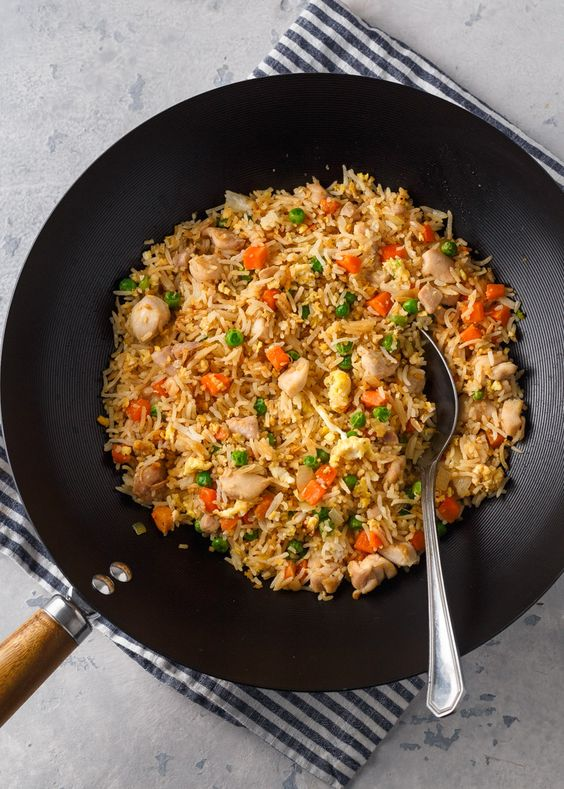

Chicken fried rice recipe

Description
one of our go-to EASY 30-minute meals. Fried Rice is perfect for meal prep and a genius way to use leftovers.
It’s actually even better with leftover rice.
Ingredients
- 1 lb ground beef, (15-20% fat content)
- 1 medium onion, finely diced
- 2 large garlic cloves, minced
- 1/4 cup dry red wine, or beef broth
- 1 Tbsp olive oil
- 24 oz Marinara Sauce , (3 cups)
- 1/2 tsp sea salt
- 1/4 tsp black pepper, ground
- 1/4 tsp dried thyme
- 1/2 tsp granulated sugar
- 2 Tbsp parsley, finely chopped
- 9 lasagna noodles, cooked al-dante
Ingredients for Cheese Sauce:
- 16 oz low-fat cottage cheese
- 15 oz reduced fat ricotta cheese
- 1 large egg
- 2 Tbsp parsley, finely chopped, plus more to garnish
- 4 cups mozzarella cheese, shredded, divided
Instructions
Preparing the Meat sauce
- Place a deep pan or dutch oven over medium/high heat and add 1 Tbsp olive oil, 1 lb ground beef and diced onion.
Saute, breaking up the meat, for 5 minutes or until beef is no longer pink. Add pressed garlic and sauté another minute
until fragrant
- Add 3 cups marinara, 1/2 tsp salt, 1/4 tsp pepper, 1/4 tsp thyme, 1/2 tsp sugar and 2 Tbsp parsley. Bring to a simmer
then cover and cook 5 minutes.
Preparing the Cheese sauce
In a large mixing bowl, combine:
- 16 oz Cottage Cheese
- 15 oz Ricotta
- 1 cup mozzarella
- 1 egg
- 2 Tbsp parsley
Mix well.
Preparing Lasagna
To prepare the perfect Lasagna:
- Preheat oven to 375˚F. Bring a large pot of water to a boil. Add salt and 9 lasagna noodles. Cook until al dente according to package instructions.
- Spread 1/2 cup meat sauce in the bottom of a deep 9×13 casserole dish. Add 3 noodles, spread on 1/3 of the meat sauce, and sprinkle with 1 cup mozzarella cheese.
Spoon on and spread the top with 1/2 of your cheese sauce.
- Repeat until you have 3 layers of noodles: Add 3 noodles, 1/3 meat sauce, 1 cup mozzarella cheese, 1/2 cheese sauce, Add 3 noodles, remaining 1/3 meat sauce,
remaining 1 cup mozzarella.
- Poke 9-12 toothpicks over the surface of your lasagna (to keep the foil from sticking to the cheese). Cover with foil and bake at 375˚F for 45 minutes.
- Remove foil and broil for 3 to 5 minutes, or until cheese turns golden. Let lasagna rest 30 min before slicing.